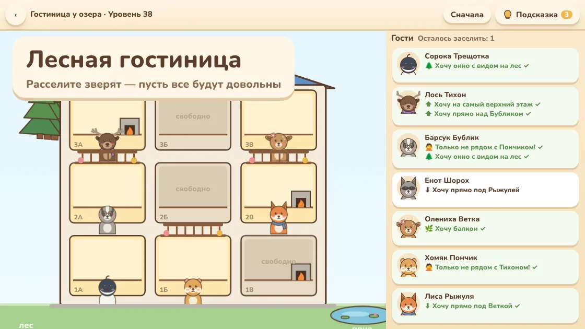
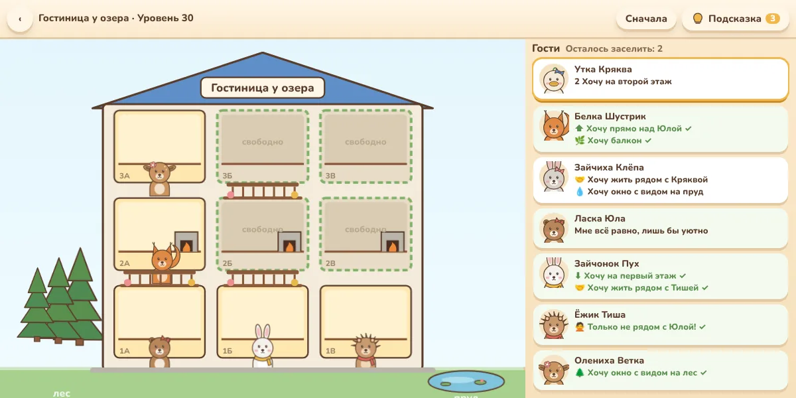
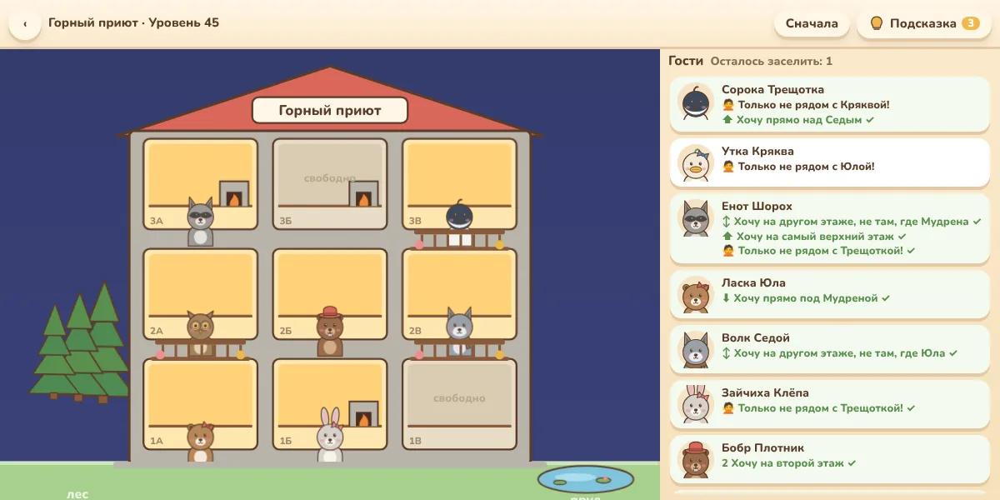
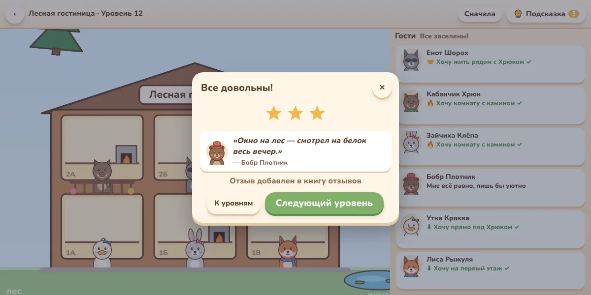

Лесная гостиница — уютная логическая игра про расселение зверят во ВКонтакте
Вы — хозяин маленькой гостиницы в лесу. У каждого гостя свои причуды: камин, балкон, вид на пруд, любимый сосед. Расселите всех так, чтобы довольны были все.

Об игре «Лесная гостиница»
«Лесная гостиница» — спокойная логическая головоломка в духе задачек «кто где живёт». В гостиницу приезжают зверята, и каждый о чём-то просит: ёжик хочет комнату с камином, зайчиха — окно с видом на пруд, белка — жить рядом с лисой, а медведь — ни в коем случае не рядом с барсуком.
Нажмите на гостя, затем на комнату — и пожелание загорится зелёным, если выполнено, или красным, если нарушено. Задача — найти расселение, при котором довольны все. У каждого уровня ровно одно решение, поэтому его можно найти чистой логикой, без угадывания.

Что есть в игре
- Своя механика: расселение по пожеланиям, у каждого уровня единственное решение
- Пожелания: этаж, камин, балкон, вид на лес или пруд, «рядом с», «не рядом с», «прямо над», «на одном этаже»
- Четыре гостиницы: Лесная, у озера, Горный приют и Сказочный терем — и бесконечные уровни
- От домика на три комнаты до трёхэтажного терема с балконами
- Подсказки прямо на карточках гостей: зелёное — выполнено, красное — нарушено
- Звёзды за прохождение и книга отзывов от довольных гостей
- Вечером и ночью в окнах загорается свет; тихая музыка
- Без всплывающей рекламы

Головоломка, которая успокаивает
Здесь нет таймеров и проигрышей: гостей можно переставлять сколько угодно, а если запутались — нажать «Подсказка», и один гость сам займёт своё место. Первые уровни решаются за минуту, поздние — с семью-восемью гостями на трёх этажах — заставят подумать.
Игра подойдёт и взрослым, и детям: она тренирует внимание и логическое мышление, а зверята и уютная гостиница делают это приятным.

Как начать играть
- Нажмите «Играть во ВКонтакте» — игра откроется в приложении или браузере.
- Нажмите на гостя внизу и прочитайте его пожелания.
- Нажмите на свободную комнату, которая ему подходит. Чтобы переселить гостя, нажмите на него в комнате.
- Когда все заселены и довольны — уровень пройден. Прогресс сохраняется в аккаунте ВКонтакте.
Частые вопросы
Игра бесплатная?
Да. Реклама показывается только по желанию — за дополнительную подсказку. Сама она игру не перекрывает.
Всегда ли есть решение?
Да, и ровно одно. Уровни строятся так, что все пожелания можно выполнить одновременно только одним способом.
Что делать, если не получается?
Нажмите «Подсказка»: один гость займёт верную комнату. Три подсказки в день бесплатно. Можно также нажать «Сначала» и начать расселение заново.
Сколько уровней?
Уровни бесконечны: после 60-го открывается «Сказочный терем», где новые уровни создаются без конца.
На чём можно играть?
На компьютере в браузере и на телефоне — в приложении ВКонтакте или в мобильном браузере.